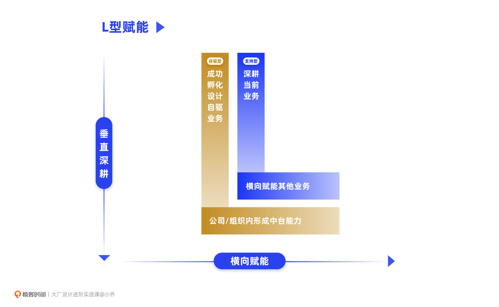
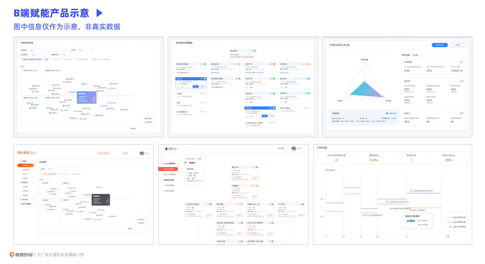

- 00 开篇词 升维思考，是设计师有效成长的第一步.md.html
- 01 业务周期：0-1-10-100-N的发展策略.md.html
- 02 商战模式：如何在商业竞争下突出重围？.md.html
- 03 市场洞察：如何找寻差异化撬动支点？.md.html
- 04 用户洞察：不懂用研的设计师不是好职场人.md.html
- 05 用户画像：是形式主义还是真的有效？.md.html
- 06 用户旅程：挖掘不同用户的核心机会点.md.html
- 07 职场晋升：看懂晋升的“游戏规则”.md.html
- 08 设计价值升级：五层进阶突破成长.md.html
- 09 基础价值 核心三原力：如何将需求转化为设计稿？.md.html
- 10 基础价值 第一性原理：从问题本质解决问题.md.html
- 11 基础价值 设计复盘：只是量化设计结果吗？.md.html
- 12 二级价值 负向网兜：如何全面发现负向问题？.md.html
- 13 二级价值 设计自驱：如何做好项目Owner？.md.html
- 14 二级价值 自驱合作：如何反内卷处理合作关系？.md.html
- 15 三级价值 增长误区：思维惯性陷阱和虚荣数据.md.html
- 16 三级价值 用户增长历程：AARRR是万能的吗？.md.html
- 17 三级价值 产品增长：如何做好产品创新？.md.html
- 18 三级价值 运营增长：如何自驱营销活动和投放？.md.html
- 19 三级价值 品牌增长 抢占心智，赢得人心红利.md.html
- 20 三级价值 增长实操：如何“步步为营”推动落地？.md.html
- 21 四级价值 L型赋能：让T型人才发挥更大价值.md.html
- 22 四级价值 “网状对比”解决共性痛点.md.html
- 23 五级价值 商业画布：设计师可以担任业务方吗？.md.html
- 24 五级价值 共创洞察：如何做好一次完善的workshop？.md.html
- 25 五级价值 领导力觉醒：写给新晋管理者.md.html
- 26 工作选择（上）：2B or 2C设计师？如何规划领域？.md.html
- 27 工作选择（下）：大厂 or 小厂？如何选择赛道？.md.html
- 28 人才地图：认知自我，成为高潜力人才.md.html
- 29 成长历程：如何从设计小白成长为团队负责人？.md.html
- 30 冰山模型：如何成为让面试官欣赏的“面霸”？.md.html
- 31 作品集指导：什么是面试官喜欢的作品集？.md.html
- 用户故事 什么是职场设计师进阶的正确姿势？.md.html
- 结束语 突破自我，成人达己.md.html
- 捐赠
21 四级价值 L型赋能：让T型人才发挥更大价值
你好，我是小乔。
恭喜你，开启了设计价值第四级的进阶之路。如果前面的课程你都已经全面掌握，并可以将软实力与硬实力在实践中充分应用，至少可以确保你在互联网职业生涯的前6年甚至前8年，都可以取得很不错的绩效，成功晋升为资深设计师或设计专家（级别由公司发展阶段和环境难度决定）。
此时的你，虽然不一定带团队，但大概率已经是重要项目的设计Owner，正在带领其他设计师一起攻坚高难度的项目。
但优秀的你，一旦在固定级别的年限待久了，遇到了成长瓶颈，依然会产生迷茫。也许你会问道：
- 我放眼望去，其实同级别的同学也都有这个水平。如果我还想进一步成长，超越其他Peers，还可以如何突破呢？
- 我是小公司的设计师，我看周围工作10多年的同事，依然在做设计支持；但在大厂工作10年的设计师，似乎早已成为设计管理者，甚至晋升为中层管理者了。
我们想要进一步成长，就需要做出更大的贡献，辐射更大的范围。而进步的大门，需要一把叫作“认知”的钥匙。
接下来，我们就来聊聊，什么是四级设计价值，以及如何让价值更大化。这节课，我们以打开思路、提升认知为主，下节课我们将一起探讨实操L型赋能项目的具体方法。
什么是四级价值？
首先，让我们一起探讨一下什么是四级价值。当我们已经可以主动自驱地推动增长项目，促进业务发展，就达成了三级设计价值。而四级价值，则是将我们孵化成功并验证有效的项目，复用给同样需要这个能力的业务团队，降低重复孵化的成本，达成降本提效的作用，从而使项目的价值更大化，拓展影响力。
设计部门通常会以中台的架构出现，你所在的团队也许负责一个较为复杂的大业务，也许同时负责多个难度适中的小业务，但不管是单个还是多个，都是一个个单点业务，而单点业务的价值天花板是可预见的。我们想要进一步拓展影响力，就要沉淀通用的能力，辐射更大的范围。
L型赋能
在阿里和京东，会把实现四级价值的过程称为“赋能”，而我将这个过程进一步描述为“L型赋能”，希望更有助于你理解四级价值。“|”表示孵化成功并验证有效的单个项目，“—”表示合理复用给其他情况相似的业务。也就是说，垂直做好自己原本的业务，再横向影响到其他业务。

如上图所示，L型赋能有两种不同的方式，带来的价值和影响力也有一定差异。
方式1：支持型
设计师以支持业务为主，将现有业务的经验积累沉淀，推动复用给更多相似的业务。这会比较类似我们之前讲过的设计复盘。
比如，TikTok的设计师在做一些落后国家地区的设计时，需要考虑到网络情况、设备状况等，因此需要尽量将App的包体减小，滤镜也以消耗流量较少、性能友好的样式为主。这些经验就可以横向赋能给同样主打落后国家的其他App。
方式2：自驱型
设计师主动发现许多有共同点的业务，在部分工作上较为重复，自驱发起降本提效的工具设计，在满足自身业务之后，同样赋能给需求相似的业务，甚至形成中台能力。
我们以Ant Design为例。设计师在支持多个中后台业务之后，发现有许多组件是相似的，而处于不同项目的设计师都在重复造轮子，造成了工作量大但工作价值重复的情况。为了进一步提升效率，Ant Design出现了，在横向对比了各个业务共同会用到的组件类型后，将可复用的模块以代码组装沉淀下来，做成一套系统。
在满足阿里内部的各个中后台业务后，Ant Design进一步向外部市场开放，在更大范围中，供各企业的B端产品高质、高效落地。
很显然，方式2的价值往往大于方式1，因为方式2不仅是经验的沉淀，更是将经验直接产品化，服务多个业务，甚至服务公司外部。而我们四级价值重点要讲的内容，正是围绕方式2展开的。
我们此时回过头来思考方式1的案例，如果你是TikTok的设计师，发现公司内有许多社交类产品，都有滤镜功能。有的主打发达国家，有的主打落后国家，一些国家之间有一定的文化辐射关系，文化经济、设备情况、用户偏好、网络硬件等方面都高度相似。那我们就可以将验证效果较好的滤镜能力产品化，将底层技术能力和滤镜素材一起打包，接入其他业务，高效达成其他业务的发布目标。
T型人才
当了解了业务应该如何L型赋能后，我们再来看看实现四级设计价值的过程中对于设计师的要求。我们想要实现更高的价值，就需要具备更全面的能力，成为“T型人才”。
相信你对这个词一定不陌生。“—”表示有广博的知识面，“|”表示有专业的知识深度，T型人才也是高潜力要求中的其中一个。那对我们设计师来说，“—”就是对业务的深度理解，要具备商业sense，清楚业务的发展重点，也理解其他职能的工作价值和利益，可以提出并拉动他人与我们一起合作；“|”就是我们扎实的设计专业能力，有清晰的设计方案推导逻辑，具备审美能力和软件技法。
也许你会好奇，三级价值要求我们自驱推动增长项目，不也需要我们成为T型人才吗？是的，只是要达成四级价值，对于横向能力的要求会更为苛刻。因为这将不再是对于单点业务的思考，而是需要了解更多相关业务，找到共性机会点。并且，由于推动项目会涉及到更多业务的同事，有一定的利益关系，这也需要我们具备更强的沟通说服能力。
如果处理不当，就会造成尴尬的处境。类似的事故其实并不少，比如某大厂的两个不同部门，曾在同一天发布了两个功能原理相似的组件搭建产品，在行业内造成了负面影响，认为这个公司的不同部门之间，由于利益问题非常之“卷”。
硬性找出项目机会点的方法和软性处理合作关系的方法，我们都会完整地贯穿在整套课程中，但想要真正具备能力，也需要我们在实际工作中不断提升成熟度和专业度。
通过案例理解四级价值
相信你已经明白，四级价值对我们来说，核心价值在于扩大项目影响力；而对企业来说，核心价值在于降本提效。
接下来，我们通过具体案例，看看大厂的设计师都是通过哪些项目，实现了四级价值。
案例一：会场搭建器
我们先以阿里的会场搭建器为例：淘宝天猫有丰富多彩的大促活动，比如双11、618、年货节、女神节等等，这些活动的主会场有许多模块的导购效果不错，而这样的设计组件就可以不断积累沉淀下来，复用给其他大促主会场。此时，如果你是淘宝天猫的设计师，会怎么做呢？
我们可以设计一个会场搭建器，上面有搭建会场页面所需的所有组件。如果是较为重要的大促活动，许多创新模块都是需要重新设计的，但一些沉淀下来的高转化模块，就可以直接拼搭；如果是一些重要级较低的促销页面，运营同学甚至可以直接配置出一个会场页面。
进一步思考，我们还可以结合AI能力。当一些导购模块的转化效率不佳时，可以自动替换成其他同类功能的模块样式。
比如，Feeds流里的商品卡片，也许是商品的白底图，也许是场景图，也许是模特图。在不同会场中，转化效率也许是不同的，也许在潮流会场，用户喜欢看到鞋子的白底图，在服装会场，用户喜欢看到服装上身的模特图。而这些可以通过AI能力，根据用户实时的点击转化率，进行替换调整，使每个会场的转化率保持最高。
同理，字节跳动也有做营销活动的搭建产品，可以在缺少设计和开发资源时，快速将不同活动模块搭建起来。比如有每日签到发金币的模块、互动答题模块、每日任务模块等等，许多活动形式在不同业务都有较好的表现，这些活动形式和模块就会打包沉淀在这个产品里。
那也许有同学会问，做了这样的产品，是不是把设计师给做没了？都不需要设计师介入了。但我们要明白的是，本身这些设计体力活，对设计师来说价值就很低，并且耗费时间。正是因为这些工具产品，释放了低价值的工作，设计师才能将时间投入在更高价值的工作中。每年的行业要求都在提升，千万不要沉溺于过往的工作惯性里。
案例二：自营零售工具
在了解了C端的搭建工具后，我们再来看一个B端的案例。
我曾经负责过一个自营业务的相关设计，这个业务叫作淘宝心选。自营业务在B端和M端的工作量是巨大的，涉及到复杂的商品生产、工厂对接、C2B选品诊断、品控质检等等流程。
如果不搭建中后台，这些大量的工作都是通过人工Excel整理的，于是我们开始搭建完整的中后台产品，将产业数字化。数字化转型，并不是将Excel的列表功能做成系统就完事了，而是要打通云端数据，智能调配，在功能模型和设计方面，将业务效率最大化。
当时在阿里内部萌生出许多自营类型的业务，在支持好淘宝心选的基础中后台业务后，我和产品经理想进一步扩大项目的价值。我们认为，在其他自营业务中，应当也需要这些功能模型和设计。
以选品后台为例，我们访谈了淘宝心选的选品小二，除此之外，我也去了解了公司内其他自营业务的选品流程，并调研了市场上传统行业的选品逻辑，以确保功能的准确性和可复用性。在了解了选品原理和工作流程后，我将便于分析市场的模型工具融入了产品功能，并以可视化的方式展示出来。

如上图所示，包含波士顿矩阵、工作流程图、机会发现、商品星盘等许多模型和功能，在满足淘宝心选业务的同时，也在阿里内部其他涉及选品的业务中被充分应用，成功赋能给淘宝特价版、虾选、天猫超市等项目，有的业务复用了一些模块，有的业务则直接使用了这套产品。这已经是2017年的设计，但对于当今的很多产业互联网行业，依然适用。
通过这两个案例，相信你已经明白，不管是2C还是2B，或是其他业务类型，都不影响我们达成四级价值，关键是我们自己的眼光要从一个个单点，连成一个面，具备体系化思维。
今日小结
今天，我们一起学习了什么是四级设计价值，以及达成四级价值对我们的能力要求。
四级价值的核心在于“L型赋能”，拓展项目的影响力，通过一个项目，赋能更多需要相似能力的业务，从而达成降本提效的作用。“本”包含了时间成本、人力成本、反复验证的成本等等，因为不再需要重复造轮子；而“效”包含了效率和效益两个方面，指数级降低了人力工作，并匹配了带来最大收益的方式。
实现四级价值，要求我们成为“T型人才”，只有懂得更多，眼光更宽广，才能找到最有价值的机会点。同时，也要求我们具备强大的软性实力，可以主导和推进项目落地。
这节课的核心关键在于，我们具备了创造四级价值的意识，从一个一个单点业务的角度，扩展为全局视角，将多个业务连成面去思考问题。除了基础价值的支持需求和二级价值的优化负向体验以外，我们一起实现了三级价值，自驱推动业务增长，而现在我们想要进一步往上，就需要扩大项目价值和影响力。
但我们需要注意的是，在实现四级价值的道路上，需要始终符合业务的发展阶段和公司的企业文化，而不是为了扩大影响力而在不恰当的时机刻意扩大。
从业务发展阶段来说，需要在对的时间做对的事。比如，当大促的组件和页面架构还没有总结出规律，还需要百花齐放多次验证时，就着急地想要搭建组件库产品，做横向赋能，这就是在错的时间做对的事。此时，应该优先抽象出表现较好的组件规律。
从公司企业文化来说，我们这套课程中始终没有讲过扩大个人影响力的方法，而是提倡扩大项目影响力，因为不同公司的文化不同，我们务必要遵守“游戏规则”。比如，我之前待过的一家企业，会鼓励提升个人影响力；而我现在所在的公司，则不鼓励个人主义，更以做好业务为重。但不管在哪家公司，做好业务，扩大项目影响力，都是最能让他人信服的方式。
在了解了四级价值的意义和要求后，下节课，我们将通过具体案例，讲解实现四级价值的方法。
互动时刻
回顾你过往的工作经历，是否曾在不同业务和项目中，遇到过重复造轮子的情况？你是如何解决的呢？
欢迎把你的经历和思考在留言区分享出来，与我和其他同学一起探讨。我们建立了一个读者交流群，欢迎你的加入！如果你觉得有所收获，也欢迎把文章分享给你的朋友一起学习。我们下节课见。
© 2019 - 2023 Liangliang Lee. Powered by gin and hexo-theme-book.